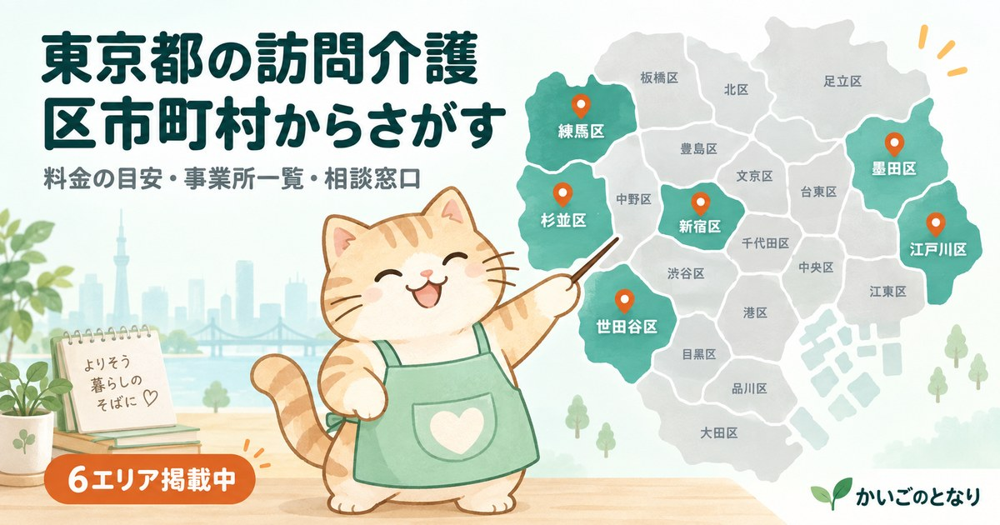

東京都の訪問介護

訪問介護は、ホームヘルパーが自宅を訪問して入浴・排せつ・食事などの身体介護と、調理・洗濯・掃除などの生活援助を行う介護保険サービスです。事業所は市区町村単位で探すのが基本になります。お住まいの地域を選んでください。
市区町村から探す
世田谷区掲載中練馬区掲載中大田区掲載中江戸川区掲載中足立区準備中杉並区掲載中板橋区掲載中葛飾区準備中品川区準備中江東区準備中北区準備中中野区準備中豊島区準備中新宿区準備中目黒区準備中墨田区準備中文京区準備中荒川区準備中台東区準備中渋谷区準備中港区準備中中央区準備中千代田区準備中八王子市準備中町田市準備中調布市準備中三鷹市準備中武蔵野市準備中狛江市準備中
東京都内で掲載中のエリアは6件です。準備中のエリアは、掲載できる事業者情報がそろい次第の公開となります。
東京都の料金は「1級地」が基準
東京23区は介護報酬の地域区分で最も高い1級地にあたり、訪問介護の1単位は11.40円です。全国のその他地域（10.00円）と比べると、同じサービスでも約14%高くなります。
| サービス区分 | 時間 | 単位数 | 1割負担の目安（1級地） |
|---|---|---|---|
| 身体介護が中心 | 20分未満 | 163単位 | 約186円 |
| 20分以上30分未満 | 244単位 | 約278円 | |
| 30分以上1時間未満 | 387単位 | 約441円 | |
| 生活援助が中心 | 20分以上45分未満 | 179単位 | 約204円 |
| 45分以上70分未満 | 220単位 | 約251円 |
※多摩地域の市町村は区によって級地が異なります。実際の適用区分はお住まいの市区町村にご確認ください。
東京23区の訪問介護事業所数と相談窓口の呼び名
同じ東京23区でも、事業所の数は区によって10倍以上の開きがあります。23区合計で約2,084件。あわせて、最初の相談先である地域包括支援センターは区ごとに独自の愛称を使っていることが多く、これが「調べても出てこない」原因になります。お住まいの区の呼び名をここで確認してください。
| 区 | 事業所数の目安 | 最初の相談窓口の呼び名 | 当サイト |
|---|---|---|---|
| 世田谷区 | 219 | あんしんすこやかセンター | 掲載中 |
| 足立区 | 194 | 地域包括支援センター | 準備中 |
| 練馬区 | 180 | 地域包括支援センター | 掲載中 |
| 板橋区 | 143 | おとしより相談センター | 掲載中 |
| 江戸川区 | 137 | 熟年相談室 | 掲載中 |
| 葛飾区 | 136 | 高齢者総合相談センター | 準備中 |
| 杉並区 | 132 | ケア24 | 掲載中 |
| 大田区 | 125 | 地域包括支援センター（さわやかサポート） | 掲載中 |
| 北区 | 82 | 高齢者あんしんセンター | 準備中 |
| 新宿区 | 76 | 高齢者総合相談センター | 準備中 |
| 江東区 | 76 | 長寿サポートセンター | 準備中 |
| 中野区 | 72 | 地域包括支援センター | 準備中 |
| 港区 | 65 | 高齢者相談センター | 準備中 |
| 豊島区 | 61 | 高齢者総合相談センター | 準備中 |
| 墨田区 | 58 | 高齢者支援総合センター | 準備中 |
| 台東区 | 54 | 地域包括支援センター | 準備中 |
| 品川区 | 53 | 在宅介護支援センター | 準備中 |
| 目黒区 | 48 | 包括支援センター | 準備中 |
| 荒川区 | 48 | 地域包括支援センター | 準備中 |
| 渋谷区 | 44 | 地域包括支援センター | 準備中 |
| 中央区 | 33 | おとしより相談センター | 準備中 |
| 文京区 | 31 | 高齢者あんしん相談センター | 準備中 |
| 千代田区 | 17 | 高齢者あんしんセンター | 準備中 |
※事業所数は介護情報サイトの掲載件数（2026年9月時点）をもとにした目安で、指定事業所数そのものではありません。休止中・新規指定の反映には時間差があります。正確な数と一覧は厚生労働省「介護サービス情報公表システム」でご確認ください。
東京都のほかのサービス
東京都の宅配弁当・配食サービス高齢者専門の宅配弁当。手渡しで安否確認、やわらか食や治療食にも対応東京都の高齢者可の賃貸年齢を理由に断られない部屋探し。公的な居住支援と専門サービス東京都の見守りサービスひとり暮らしの安否を、センサー・電話・訪問で確かめる仕組み準備中